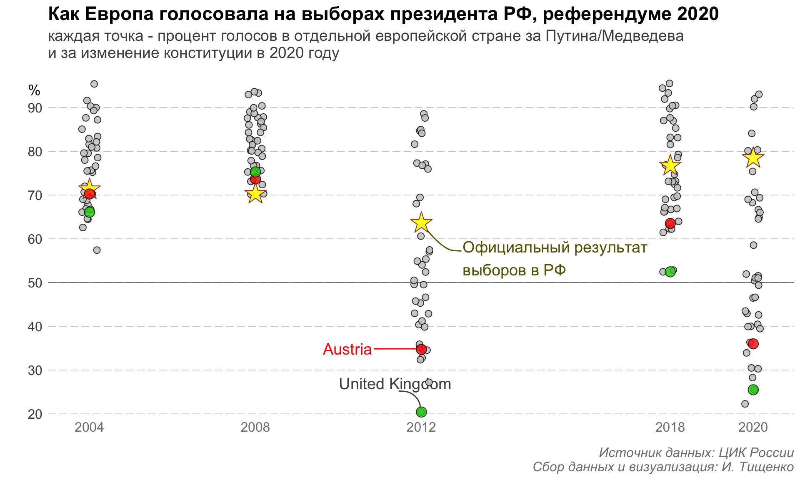

Выборы в Росии из-за границы
Как голосуют граждане РФ из-за границы
Общие сведения
За пределами России проживает 1 890 8631 избирателя, это 1.7% от всех избирателей. В Европе проживает в районе 679 028 человек, 0.6%. Больше всего в Европе россиян живет в Германии - 237 816 (35%).
Явка
Явка в Германии в районе 14%.
Явка в Австрии ±14%, если считать относительно проживающих в Вене. На последние выборы президента в 2018 году в Вене пришло 2248 человека, в Австрии в 2018 году проживало 32 4292 человека с российским гражданством из них примерно 50% живет в Вене.
Как голосует Европа

Вопросы и предложения: ТГ @vearlen